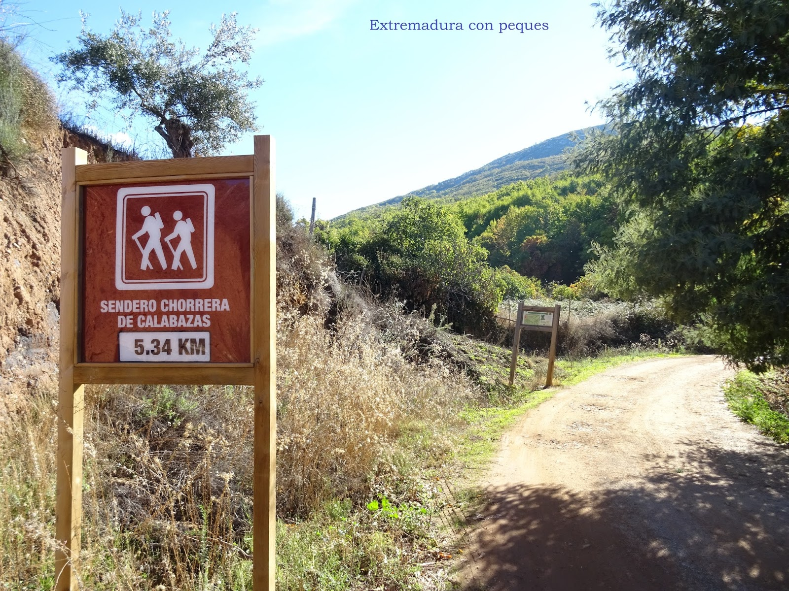
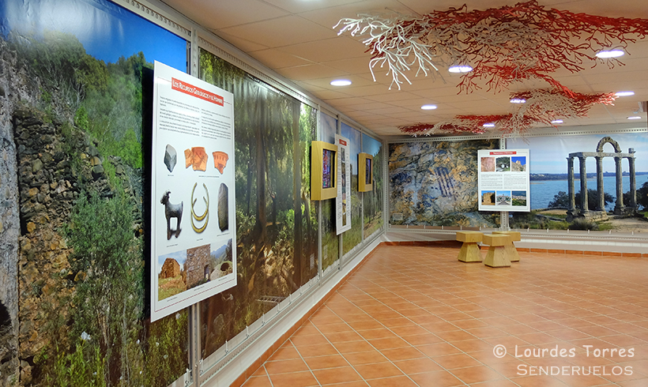
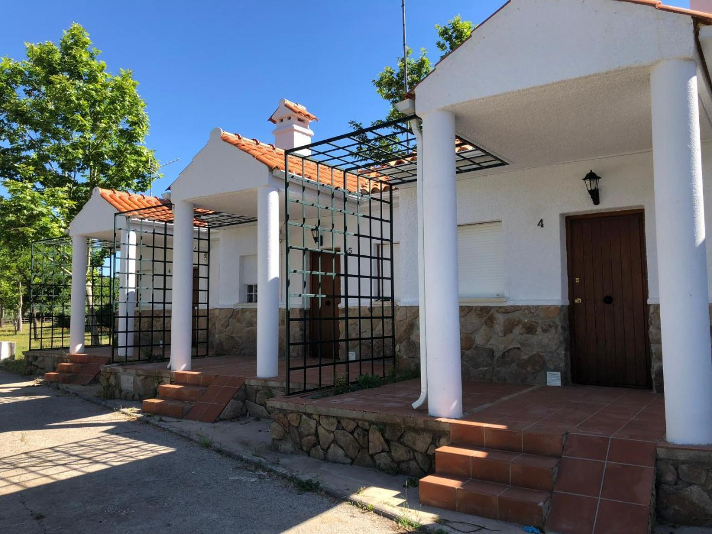
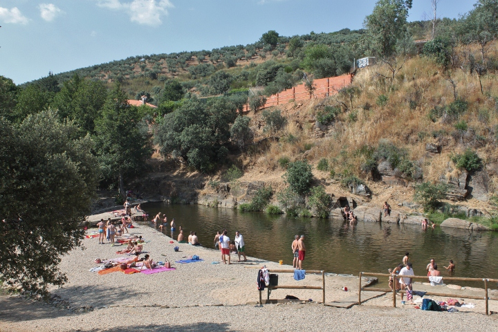

Información Turística
Situación geográfica
Castañar de Ibor está situado en el corazón de la comarca del Geoparque Mundial Unesco Villuercas
Ibores Jara, enclave único en el mundo.
Ruta a los castaños y a la Chorrera de Calabazas
Se trata de una ruta muy bonita, de dificultad relativamente baja, que pueden realizar adultos y niños.
La Chorrera de Calabazas se encuentra junto al municipio, por lo que se puede compaginar la ruta
con la realización de otras actividades en la zona. Además, en la ruta se puede disfrutar de los milenarios
Castaños de Calabazas.

Las Cuevas de Castañar
Fueron descubiertas en 1967 y son un auténtico tesoro geológico. Estas cuevas destacan por su gran riqueza en
formaciones de espeleotemas como estalactitas, estalagmitas, columnas, y excéntricas, muchas de las cuales
presentan formas y colores únicos. La cueva se originó por la disolución de mármoles en un entorno kárstico,
lo que ha dado lugar a su compleja estructura interna. Declarada Monumento Natural en 1997,
su acceso está limitado para preservar su frágil ecosistema. Es conocida por su valor científico,
paisajístico y turístico.
El Centro de Interpretación
El centro de interpretación ofrece la posibilidad de conocer, aunque sea de manera virtual, el geoparque. El centro
alberga una exposición permanente que, además de ofrecer al visitante una visión general de los valores naturales y
culturales de la comarca, le permitirá adentrarse, gracias a la ayuda de recursos multimedia, en el mundo de las
cavidades subterráneas así como conocer, a través de una reproducción en 3D, la cueva de Castañar.

El Camping Los Ibores
Aunque se encuentra cerrado temporalmente, es un lugar perfecto para pasar unos días con la familia y/o con
los amigos.

La piscina natural
La piscina natural de Castañar de Ibor se encuentra camino de Guadalupe, en el corazón del Geoparque
Villuercas- Ibores- Jara. A "La presa”, como popularmente se la conoce, se accede bajo el puente que salva el río,
a tres kilómetros del municipio.
